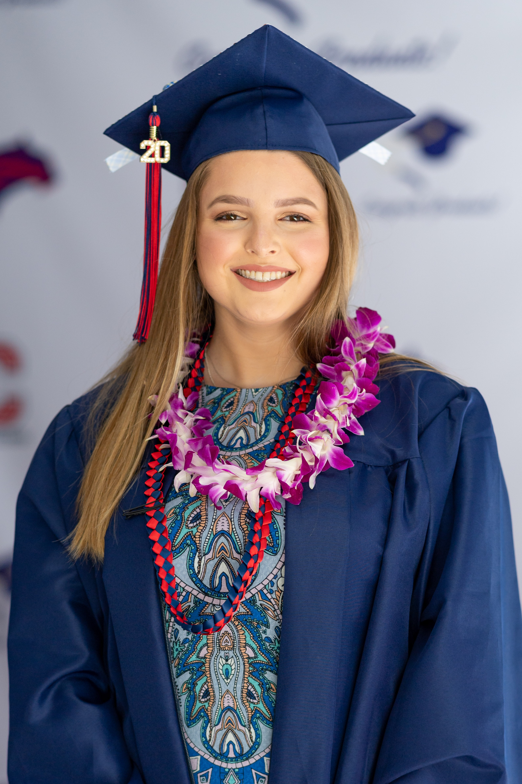
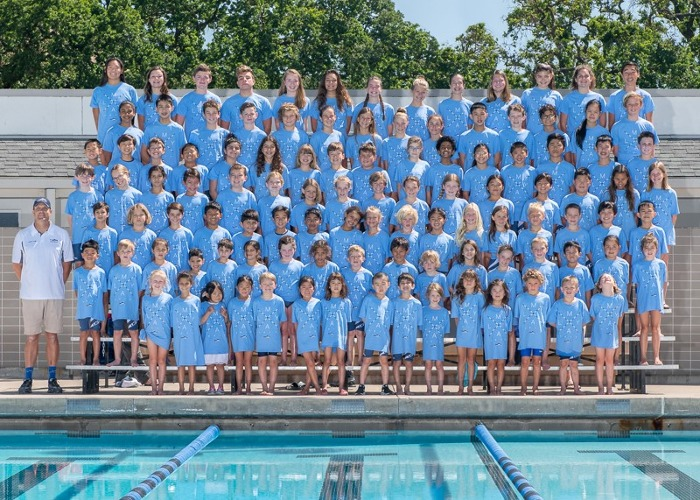
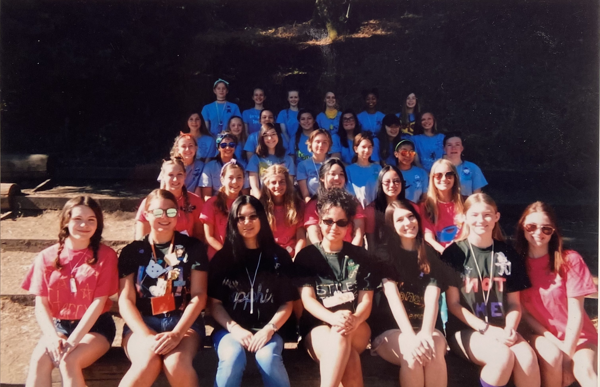
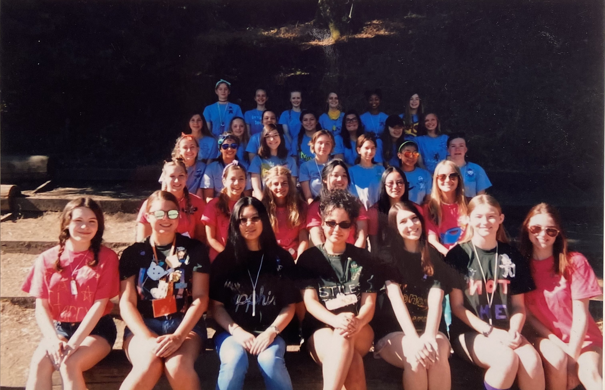

Georgina Williams
I have been working with others in team environments for the past 5 years and I have had experience training other employees for the past 2 years. I have coached on a recreational swim team in my area where I was required to watch over large groups of children, communicate with the other coaches and swim team staff, and work at practices and competitions. Over the summer, due to the COVID-19 pandemic, the regular season was changed to clinics where I was in charge of creating new workout routines for each weekday, executing that workout with my group of swimmers, and giving each swimmer feedback. I worked with children from ages 4 to 10 over the course of 8 weeks.
In regards to volunteer work, I have worked with multiple volunteer groups since childhood. In 2019 I was a camp counselor trainer as well as a camp counselor for the Girl Scouts of America. I have been a camp counselor since 2014 and a trainer since 2019. My responsibilities as a trainer for the counselors was to prepare a lesson to teach them their responsibilities as a camp counselor, along with working in a team of other trainers. As a camp counselor, I was in charge of groups of children ranging from 15 to over 100 children. I was also responsible for leading group activities and supervision of the children from 8:00 a.m. to 3:00 p.m.
I have been studying Spanish since the age of 3 and I have been able to use those skills in the workforce as well as in the classroom. I studied Spanish for 3 years in high school and I received a 5 on the Spanish language and culture AP exam in 2019. In 2014 I was a camp counselor at a Spanish school where children learned and improve their skills with the Spanish language. I was put in charge of leading group activities while using Spanish rather than English to further the education of the campers, as well as helping in the office of the school by preparing class materials.
From 2017 to 2019 I volunteered with an organization that assisted in home renovations and improvements for individuals in low-income neighborhoods. As a volunteer, I assisted with many hands-on projects and had to utilize teamwork skills. The volunteer work was one day every year for around 4 hours the day.
In the fall of 2020, I began attending class at the University of California, Riverside in Riverside, California. In my first quarter, I was enrolled in 3 academic classes and one learning community and received a 4.00 GPA. I excelled in my computer programming course and this quarter I am enrolled in an introductory macroeconomic course and an introductory computing course. I strive for impressive grades and academic achievements and I plan on involving myself in more student-run groups and extracurricular activities once the pandemic subsides and academic activities can return to the Riverside campus.
Experience
Camp Counselor Trainer
• Lead training lessons to hundreds of camp counselours in training
• Assisted in the creation of lesson plans and activities
• Experience with teamwork, communication, and organization
Swim Coach
• Assisted in the training of swimmers from age 3-10
• Created swim workouts and lead workouts
• Worked with fellow junior coaches and head coach to organize swimmers and create workouts
Student in CS 005 at UCR
• Learned how to create apps using blocks of code with the program Thunkable
• Learned about the history of programing and the termonology around programming
• Recieved an A in the class and full credit for all assignments
Education
UC Riverside
University of California Riverside
Portfolio




